-目次-
-ミステリー Mystery-

小説情報
著者：アガサ・クリスティー
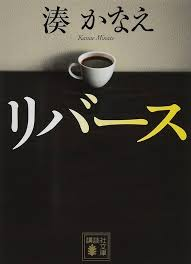リバース
小説情報
著者：湊かなえ、発行元：講談社、ページ数：280ページ
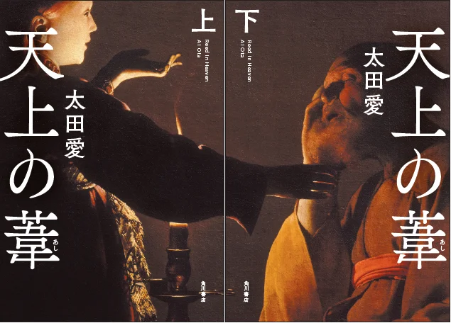天上の葦
天上の葦 上、天上の葦 下
小説情報
著者：太田愛、発行元：角川文庫
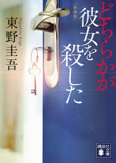どちらかが彼女を殺した
本の最後に別冊で解説が付いている
小説情報
著者：東野圭吾、発行元：講談社、次作：悪意
小説情報
著者：宮部みゆき、発行元：朝日新聞社
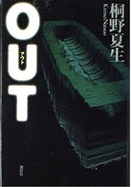OUT
小説情報
著者：桐野夏生、発行元：講談社
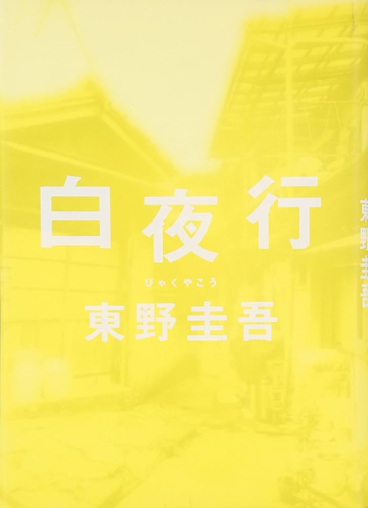白夜行
小説情報
著者：東野圭吾、発行元：集英社、意味：日の出前および日没後のかなり長い時間にわたって薄明が続く現象
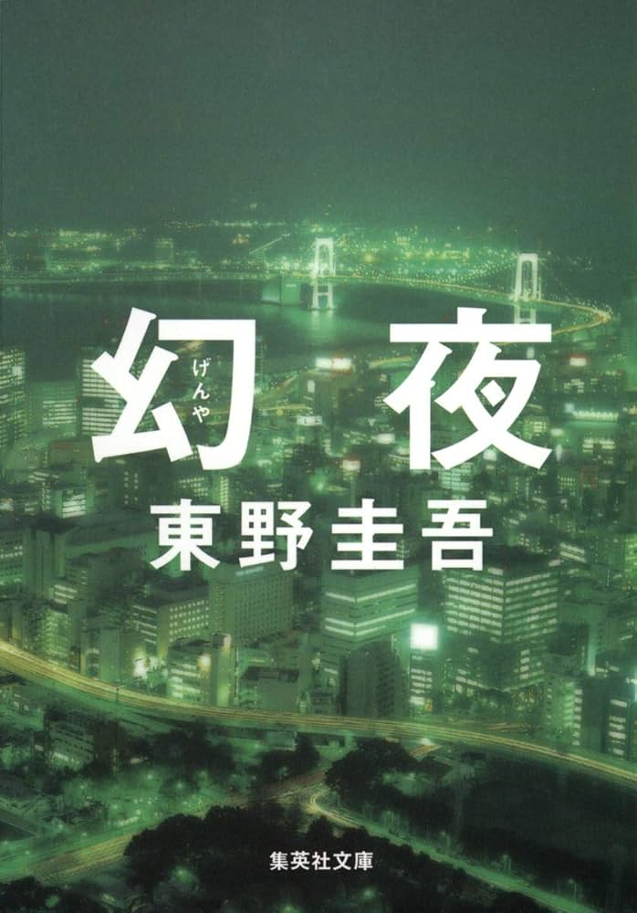幻夜
白夜行の続きの物語
小説情報
著者：東野圭吾、発行元：集英社、ページ数：528ページ-ホラー Horror-
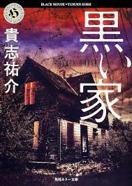黒い家
小説情報
著者：貴志祐介、発行元：角川書店、ページ数：365ページ
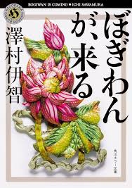ぼぎわんが、くる
小説情報
著者：澤村伊智、発行元：KADOKAWA、ページ数：352ページ
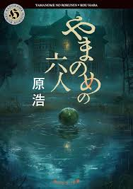やまのめの六人
小説情報
著者：原浩
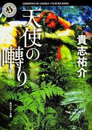天使の囀り
小説情報
著者：貴志祐介
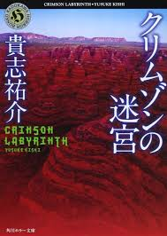クリムゾンの迷宮
小説情報
著者：貴志祐介
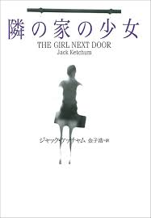隣の家の少女
実際にあった事件をもとに書かれた
小説情報
著者：ジャック・ケッチャム、発行元：扶桑社
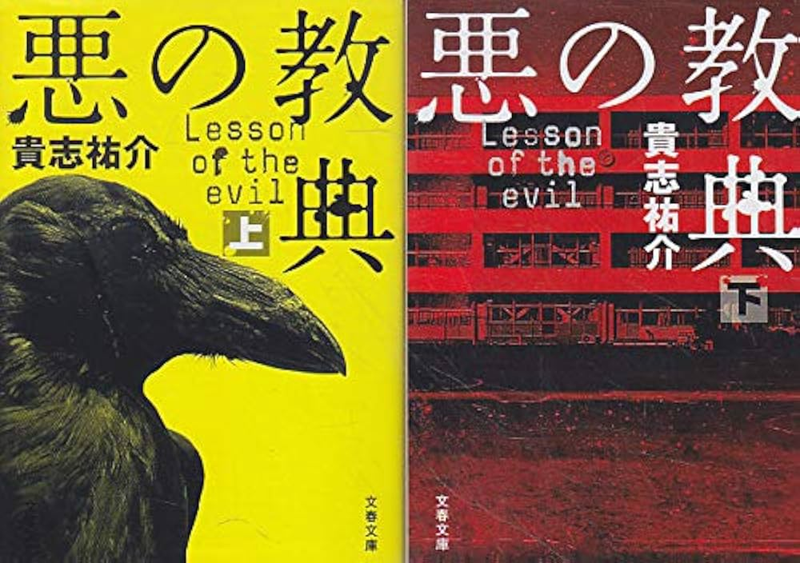悪の教典
悪の教典 上、悪の教典 下
小説情報
著者：貴志祐介
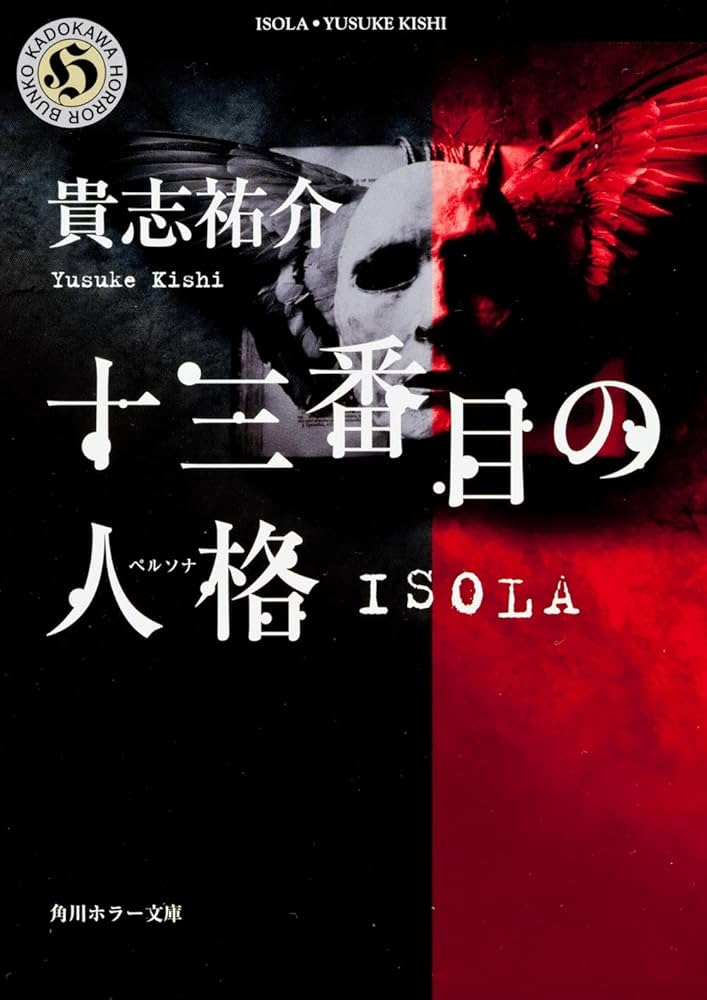十三番目の人格 ISOLA
小説情報
著者：貴志祐介、発行元：角川書店-小説に関する情報 Imformation-
作家情報
最終学歴：京都大学(経済学部)作家情報
最終学歴：大阪府立大学(工学部)作家情報
職業：青年海外協力隊隊員としてトンガに赴任出版社情報
角川文庫（ホラー） - カドカワストア KADOKAWAでは様々なホラー小説が楽しめる。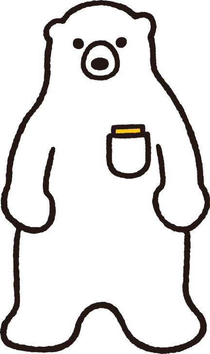講談社文庫